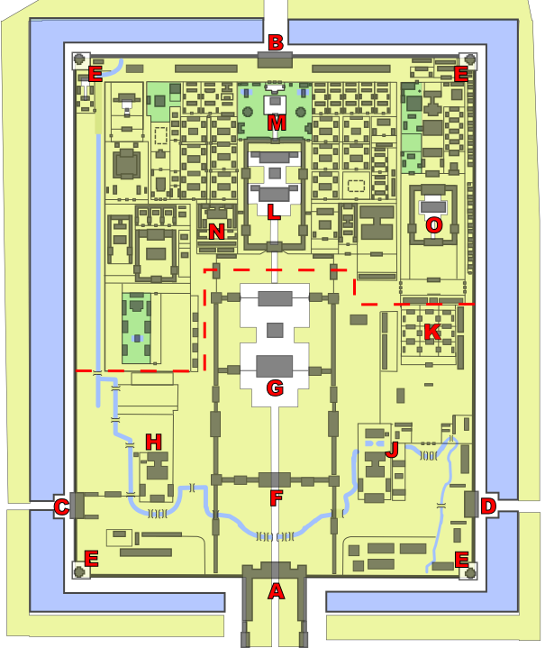

The Map
Click a pin. That's it. That's the instructions.

N ↑
Base plan: labeled Forbidden City floor plan by Tommy Chen, Wikimedia Commons (CC BY-SA 3.0 / GFDL) — my pins and commentary are extra.
Click a pin. That's it. That's the instructions.

Base plan: labeled Forbidden City floor plan by Tommy Chen, Wikimedia Commons (CC BY-SA 3.0 / GFDL) — my pins and commentary are extra.